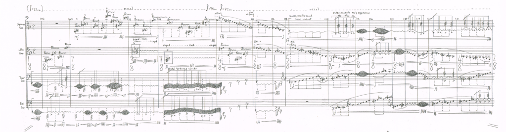

Composer Wolf Edwards and the Quasar Saxophone Quartet of Montreal celebrate their twenty year collaboration with a brand new composition entitled Torque (twisting force). This new work will be premiered in Victoria, BC at the bi-annual SALT Festival of Contemporary music (details TBA) this January. It will also be recorded this January for the composer’s upcoming portrait CD/vinyl record
Upcoming portrait CD entitled Outer Planes: The Sound Compositions by Wolf Edwards is to be recorded this January 6th, 7th, & 8th at the University of Victoria by sound engineer Paul Luchkov. This will mark the composer’s first ever portrait CD/vinyl release. The record will feature five works: Torque for saxophone quartet, The June 2nd Movement for chamber ensemble, Chains for solo electric guitar and electronics, Um Allien Zu Kampfen for solo bass clarinet and electronics, and Migration of Forms(Civilian Death Toll) for two saxophones and percussion. The album includes performers who have commissioned, performed, and supported the composers work throughout the length of his career. These include The Tsilumos Ensemble, The Quasar Saxophone Quartet, guitarist Adrian Verdejo, and clarinetist Liam Hockley.
Vancouver New Music presents guitarist Adrian Verdejo performing works by Wolf Man Edwards and Peter Hannan. New composition “Chains” for solo guitar and electronics will be premiered in this online concert on February 20th 2021 at 2:00pm PST, and the performance video will be available until February 28th. More info
Wolf Edwards has recently been awarded a project grant, from the Canada Council for the Arts, to record and release six of his works onto vinyl LP as well as CD format. Works scheduled for studio recordings are Cluster Bomb Unit for amplified viola & electric guitar, The June 2nd MovemenThe June 2nd Movement for chamber ensemble, Um Allein Zu Kampfen for solo amplified bass clarinet, Planes Of Decay for amplified guitar trio as well as two new works! Featured performers are Adrian Verdejo, The Quasar Saxophone Quartet, Liam Hockley, The Tsilumos Ensemble, Mark Molnar and many more!
Guitarist Adrian Verdejo was successful in the commissioning of a new work for solo guitar. Commission made possible through the Canada Council for the Arts.
Guitar trio Planes Of Decay (a tribute to Helmut Lachenmann) for three amplified guitars (electric, classic, steel string or a mix of all three), commissioned by the Victoria Guitar Trio was completed earlier this year and is scheduled for performance this winter.
Liam Hockley performs Um allein zu kämpfen for amplified solo bass clarinet.
The Fox Cabaret
Music on Main Concert Series
2321 Main St, Vancouver, BC
8pm
Liam Hockley performs Um allein zu kämpfen for amplified solo bass clarinet
Open Space, 510 Fort St.
Liam Hockley, Clarinet
Outer Planes—Predator Drone MQ-1 for saxophone quartet and electronics will be performed at the University of Victoria by the Quasar Saxophone Quartet as part of the Salt Festival of Contemporary Music
Wolf Edwards will be teaching as a session professor of music composition at the University of Victoria this winter/spring.
The Victoria Guitar Trio grant application, for a new composition from Wolf Edwards, has been approved by the Canada Council for the Arts!
The writing, for three amplified classic guitars, will begin this January.
Victoria Guitar Trio: http://www.victoriaguitartrio.com/
Wolf Edwards will be teaching as a session professor of music composition at the University of Victoria this winter/spring.
Article on Wolf Edwards in Musicworks magazine by Alex Varty – Read the article here.
Victoria’s own Tsilumos Ensemble performs The June 2nd Movement for saxophone, piano, guitar, viola, and harpsichord at UQAM, March 3rd, 2015. This is the second performance of this work. More information from SMCQ
Kris Covlin, Colin MacDonald, and Remy Siu premiere a new work by Wolf Edwards entitled Civilian Death Toll for amplified saxophones and percussion. This performance will take place at the Presentation House Theatre, 333 Chesterfield Ave, North Vancouver, BC. Concert begins at 8pm. For more information: (604) 990-3473
Wolf Edwards is profiled for Music Works Magazine, the fall issue #120. This profile includes a companion CD that features two of Wolf’s works: Ichos, performed by the Arditti String Quartet, and Cluster Bomb Unit, performed by the Verdejo Duet.
Long time collaborators, and friends, the Quasar Saxophone Quartet of Montreal will be performing the European premier of my new work for saxophone quartet and electronics: Predator Drone MQ-1 commissioned by the Quasar and Western Front, written 2013.